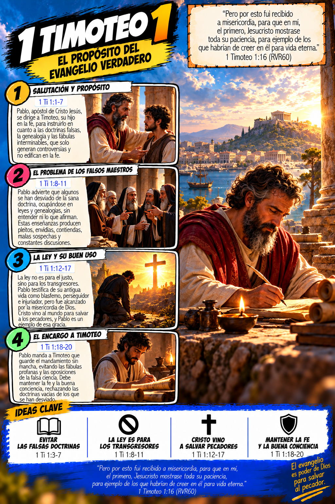

📚
Antiguo y Nuevo Testamento
Contenido organizado por los libros de la Biblia.
Una edición digital con ilustraciones bíblicas organizadas por libros y capítulos, más un índice interactivo para ayudarte a encontrar cada sección.
Producto digital en PDF. Necesitarás espacio disponible para descargar el archivo.
Estas muestras permiten ver el estilo visual del contenido antes de comprar. La versión completa se entrega en PDF.
La edición reúne ilustraciones bíblicas organizadas por libros y capítulos, junto con un índice interactivo para facilitar la navegación.
Estas son páginas reales de la colección ilustrada de EL BEREANO, no imágenes de ejemplo genéricas.

Diseñada para consultar y explorar el contenido bíblico de manera visual, desde computadoras y dispositivos compatibles con PDF.
Contenido organizado por los libros de la Biblia.
Recursos visuales creados para acompañar el estudio bíblico.
Navega por los libros usando los enlaces del índice y los marcadores del documento.
Realiza el pago y envía tu pedido para coordinar la entrega digital.
Por seguridad, espera la confirmación del vendedor. No compartas claves ni códigos de seguridad.
💬 COMPRAR POR MESSENGER¿Tienes dudas? Escríbenos por Messenger desde la página oficial de EL BEREANO. No necesitas compartir tu número de teléfono.
Escanea este QR con Yape
Después de verificar el pago, el vendedor te enviará un enlace de descarga digital.
No. Es una edición digital en PDF; no se envía un ejemplar impreso.
Aproximadamente 1 GB. Comprueba que tienes espacio disponible y una conexión estable antes de descargarlo.